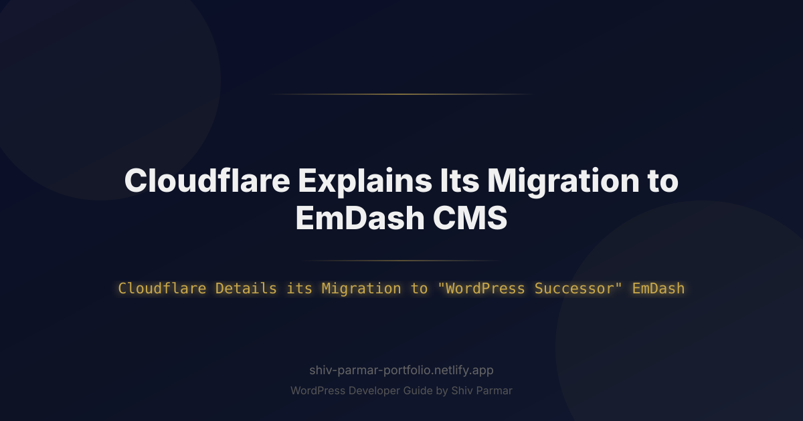

Cloudflare Explains Its Migration to EmDash CMS | Shiv Parmar
Table of Contents
- What is EmDash CMS and How Does It Compare to WordPress?
- Why Cloudflare's Migration Matters in 2026
- Step-by-Step Guide: Executing an Enterprise Migration from WordPress to EmDash
- Best Practices for Migrating from WordPress to EmDash
- Common Mistakes to Avoid During Large-Scale CMS Migrations
- Conclusion
For nearly two decades, WordPress has served as the operational foundation for a vast portion of the web, powering millions of personal blogs, corporate sites, and enterprise media platforms. However, as modern web architecture shifts away from central server instances toward distributed edge networks, zero-trust security perimeter models, and hyper-optimized runtime environments, traditional monolithic content management systems (CMS) are reaching their structural limitations. When Cloudflare Details its Migration to "WordPress Successor" EmDash, the engineering community takes notice—marking a key shift in how high-scale enterprise organizations publish, manage, and deliver web content globally.
Operating high-traffic corporate blogs on legacy PHP and MySQL stacks introduces continuous engineering overhead. Organizations face persistent caching challenges, complex multi-region database replication delays, and an endless cycle of plugin vulnerabilities and security patches. Cloudflare's decision to move away from a traditional legacy setup to EmDash—a lightweight, edge-native CMS designed specifically for serverless environments—is more than an internal tech stack refresh. It serves as a real-world case study for the modern web engineering ecosystem.
In this technical deep dive, we will analyze why Cloudflare Details Migration strategies as a scalable blueprint for modernizing enterprise web infrastructure. We will examine the core differences between traditional WordPress deployments and edge-native CMS architectures, walk through a step-by-step migration guide complete with practical code examples, and review essential best practices and common pitfalls to avoid during high-stakes migrations.
What is EmDash CMS and How Does It Compare to WordPress?
EmDash is an open-source, edge-native Content Management System built explicitly to run on serverless runtimes such as Cloudflare Workers, Node.js edge runtimes, and distributed key-value/document data stores. Unlike traditional monoliths that rely on dynamic server-side rendering (SSR) via central virtual machines, EmDash executes content delivery logic directly at the edge—millimeters away from the end user.
Traditional platforms like WordPress operate on a classic LAMP (Linux, Apache, MySQL, PHP) or LEMP stack. When an uncached request hits a WordPress site, the server must boot the PHP interpreter, execute core files, load dynamic plugins, query the central MySQL database, compile the resulting HTML, and return it down the wire. While caching plugins and CDNs mitigate this lag, the baseline architecture remains tied to a single origin server model.
By contrast, EmDash separates the content authoring interface from the global distribution layer. Content is stored as optimized JSON, Markdown, or SQLite-compatible records (such as Cloudflare D1 or KV stores) across global point-of-presence (PoP) locations. There is no central database bottleneck, no server memory footprint to scale under heavy load, and no execution delay. When Cloudflare Details its Migration to "WordPress Successor" EmDash, the focus centers on replacing origin-heavy dynamic generation with instant, global edge execution.
| Architecture Attribute | Legacy WordPress Setup | EmDash Edge CMS Platform |
|---|---|---|
| Execution Environment | Central Origin Server (PHP-FPM, Apache/Nginx) | Serverless Edge Workers (V8 Isolation Runtimes) |
| Database Model | Relational MySQL / MariaDB Origin Instance | Distributed Edge DB (Cloudflare D1 / SQLite / KV) |
| Security Footprint | High (PHP security vectors, third-party plugin vulnerabilities) | Minimal (Static compilation, zero-trust edge APIs) |
| Global Latency | Dependent on CDN cache hits; origin fetch spans ~200-800ms | Consistent single-digit millisecond response times globally |
| Media Handling | Local server disk storage or attached block volumes | S3-Compatible Edge Object Storage (Cloudflare R2) |
| Developer Experience | PHP templates, hooks, action filters, local DB setups | TypeScript, Web APIs, Git-driven deployment pipelines |
Why Cloudflare's Migration Matters in 2026
In 2026, web performance is no longer evaluated solely by how quickly a page loads under ideal conditions. Core Web Vitals, server response times (TTFB - Time to First Byte), energy efficiency, and zero-trust security postures dictate technical strategy. When Cloudflare Details Migration steps publicly, it highlights several key factors driving enterprise web engineering toward edge-native CMS solutions:
- Elimination of the PHP Vulnerability Surface: Millions of automated bots continuously scan WordPress installations for outdated plugin exploits, SQL injection paths, and remote code execution (RCE) bugs. Transitioning to EmDash eliminates the PHP runtime entirely, drastically reducing the security surface area.
- Zero-Infrastructure Scaling: Traditional enterprise CMS stacks require complex auto-scaling groups, load balancers, and multi-region database read-replicas to handle sudden traffic spikes (such as viral product launches or breaking news announcements). EmDash leverages serverless isolates that scale instantaneously from zero to millions of requests without manual provisioning.
- Sub-50ms Global TTFB: Caching full HTML pages at the CDN layer in standard CMS configurations often causes issues with dynamic features, personalized content, and real-time updates. Because EmDash runs content logic directly inside the edge Worker, dynamic content can be constructed and injected at the edge in single-digit milliseconds before reaching the browser.
- Drastic Total Cost of Ownership (TCO) Reduction: Maintaining cloud database clusters (e.g., AWS RDS for MySQL), EC2 application nodes, and dedicated caching layers like Redis incur substantial ongoing operational expenses. Migrating to serverless edge primitives (Workers, D1, R2) cuts infrastructure costs significantly while improving uptime SLAs.
Step-by-Step Guide: Executing an Enterprise Migration from WordPress to EmDash
Migrating a large-scale enterprise site from WordPress to EmDash requires a structured, multi-phase technical approach. Below is the operational workflow modeled after real-world edge migration strategies.
Step 1: Content Extraction and Schema Normalization
The first task involves pulling content out of the WordPress MySQL database via the REST API or WP-CLI and converting it into structured JSON or Markdown formats suitable for EmDash key-value stores or edge SQL tables.
The TypeScript script below demonstrates how to fetch, clean, and format posts from a legacy WordPress REST API endpoint into an EmDash-compliant schema:
import fs from 'fs/promises';
import fetch from 'node-fetch';
interface WPPost {
id: number;
slug: string;
title: { rendered: string };
content: { rendered: string };
excerpt: { rendered: string };
date: string;
categories: number[];
}
interface EmDashArticle {
id: string;
slug: string;
title: string;
bodyHtml: string;
summary: string;
publishedAt: string;
metadata: {
legacyWpId: number;
importedAt: string;
};
}
async function exportWordPressToEmDash(wpDomain: string) {
console.log(`[Migration] Starting extraction from ${wpDomain}...`);
let page = 1;
let totalPostsExtracted = 0;
while (true) {
const response = await fetch(`https://${wpDomain}/wp-json/wp/v2/posts?per_page=100&page=${page}`);
if (!response.ok) break;
const posts = (await response.json()) as WPPost[];
if (posts.length === 0) break;
for (const post of posts) {
const emDashPayload: EmDashArticle = {
id: `art_${post.id}`,
slug: post.slug,
title: post.title.rendered,
bodyHtml: cleanWordPressHtml(post.content.rendered),
summary: post.excerpt.rendered.replace(/<[^>]*>/g, '').trim(),
publishedAt: post.date,
metadata: {
legacyWpId: post.id,
importedAt: new Date().toISOString(),
},
};
await fs.writeFile(
`./exported-content/${post.slug}.json`,
JSON.stringify(emDashPayload, null, 2)
);
totalPostsExtracted++;
}
console.log(`[Migration] Processed page ${page} (${totalPostsExtracted} total articles)`);
page++;
}
console.log(`[Migration] Extraction complete. Total items: ${totalPostsExtracted}`);
}
function cleanWordPressHtml(html: string): string {
// Strip WordPress shortcodes, legacy classes, and unwanted inline attributes
return html
.replace(/\[caption[^\]]*\](.*?)\[\/caption\]/gi, '$1')
.replace(/class="wp-image-\d+"/gi, '')
.trim();
}
exportWordPressToEmDash('blog.example.com');
Step 2: Database and Asset Relocation (Cloudflare D1 & R2 Integration)
Traditional WordPress deployments rely on `/wp-content/uploads/` directory trees. In the EmDash paradigm, assets are uploaded to object storage like Cloudflare R2, while structural metadata and post relations are seeded into a global distributed database like Cloudflare D1 (SQLite at the edge).
Execute the following SQL schema setup on your target Cloudflare D1 instance using wrangler:
-- Schema definition for EmDash edge database (schema.sql)
DROP TABLE IF EXISTS articles;
CREATE TABLE articles (
id TEXT PRIMARY KEY,
slug TEXT UNIQUE NOT NULL,
title TEXT NOT NULL,
content_body TEXT NOT NULL,
summary TEXT,
author_id TEXT NOT NULL,
published_at DATETIME NOT NULL,
updated_at DATETIME DEFAULT CURRENT_TIMESTAMP,
status TEXT CHECK(status IN ('draft', 'published', 'archived')) DEFAULT 'published'
);
CREATE INDEX idx_articles_slug ON articles(slug);
CREATE INDEX idx_articles_published ON articles(published_at DESC);
Execute the schema migration via your command line interface:
# Provision D1 Database
npx wrangler d1 create emdash-db
# Execute schema application against remote database
npx wrangler d1 execute emdash-db --file=./schema.sql
Step 3: Building the EmDash Edge Router and Rendering Worker
Instead of passing incoming HTTP traffic to an origin server, an edge worker intercepting incoming routing requests handles page rendering directly. EmDash retrieves the clean article HTML from Cloudflare D1 or KV storage, constructs the template dynamically, and applies edge-cache controls.
Below is an example of an edge request handler written for Cloudflare Workers targeting the EmDash core runtime:
export interface Env {
EMDASH_DB: D1Database;
CONTENT_CACHE: KVNamespace;
}
export default {
async fetch(request: Request, env: Env, ctx: ExecutionContext): Promise<Response> {
const url = new URL(request.url);
const path = url.pathname;
// Handle static root or API routes separately
if (path.startsWith('/api/')) {
return handleApiRequests(path, env);
}
// Attempt to extract slug from /posts/:slug
const match = path.match(/^\/posts\/([a-zA-Z0-9-]+)\/?$/);
if (!match) {
return new Response('Not Found', { status: 404 });
}
const slug = match[1];
// Check fast KV Cache first
const cacheKey = `article:${slug}`;
const cachedHtml = await env.CONTENT_CACHE.get(cacheKey);
if (cachedHtml) {
return new Response(cachedHtml, {
headers: {
'content-type': 'text/html;charset=UTF-8',
'x-emdash-cache': 'HIT',
'cache-control': 'public, max-age=3600, s-maxage=86400, stale-while-revalidate=600',
},
});
}
// Database Lookup fallback if Cache misses
const article = await env.EMDASH_DB.prepare(
'SELECT title, content_body, published_at FROM articles WHERE slug = ? AND status = ?'
)
.bind(slug, 'published')
.first<{ title: string; content_body: string; published_at: string }>();
if (!article) {
return new Response('Article Not Found', { status: 404 });
}
// Dynamic Edge Layout Synthesis
const fullHtml = `
<!DOCTYPE html>
<html lang="en">
<head>
<meta charset="UTF-8">
<title>${article.title}</title>
<meta name="viewport" content="width=device-width, initial-scale=1.0">
<link rel="stylesheet" href="/styles/main.css">
</head>
<body>
<main class="article-container">
<h1>${article.title}</h1>
<time>${new Date(article.published_at).toLocaleDateString()}</time>
<article class="content">
${article.content_body}
</article>
</main>
</body>
</html>
`;
// Asynchronously populate KV store for subsequent hits
ctx.waitUntil(env.CONTENT_CACHE.put(cacheKey, fullHtml, { expirationTtl: 86400 }));
return new Response(fullHtml, {
headers: {
'content-type': 'text/html;charset=UTF-8',
'x-emdash-cache': 'MISS',
'cache-control': 'public, max-age=3600, s-maxage=86400, stale-while-revalidate=600',
},
});
},
};
async function handleApiRequests(path: string, env: Env): Promise<Response> {
return new Response(JSON.stringify({ status: 'EmDash API active' }), {
headers: { 'content-type': 'application/json' },
});
}
Step 4: Executing Redirect Mapping & URL Canonicalization Engine
Preserving search engine rankings during an enterprise site migration requires precise handling of legacy URL structures. WordPress often relies on specific permalink formats (such as /2024/05/12/post-title/ or /?p=1289).
When Cloudflare Details its Migration to "WordPress Successor" EmDash, maintaining zero broken links through an edge redirect map is a core requirement. The following edge snippet illustrates how to enforce high-performance 301 permanent redirects without sending traffic back to a origin server:
const LEGACY_REDIRECT_MAP = new Map<string, string>([
['/2023/01/15/legacy-wordpress-post', '/posts/legacy-wordpress-post'],
['/category/uncategorized/page-1', '/blog'],
['/wp-content/uploads/2022/10/whitepaper.pdf', 'https://assets.example.com/whitepaper.pdf'],
]);
export function handleLegacyRedirects(request: Request): Response | null {
const url = new URL(request.url);
const path = url.pathname;
// Direct map check
if (LEGACY_REDIRECT_MAP.has(path)) {
const destination = LEGACY_REDIRECT_MAP.get(path)!;
return Response.redirect(destination, 301);
}
// Regex capture check for WP permalink structure: /YYYY/MM/DD/slug
const wpDatePermalinkRegex = /^\/\d{4}\/\d{2}\/\d{2}\/([a-zA-Z0-9-]+)\/?$/;
const match = path.match(wpDatePermalinkRegex);
if (match) {
const cleanSlug = match[1];
return Response.redirect(`https://${url.hostname}/posts/${cleanSlug}`, 301);
}
return null;
}
Step 5: Cutover, Validation, and Edge Cache Purging
Once content seeding and route handler implementations are complete, the cutover phase begins. The global DNS layer switches routing target bindings directly to the Workers pipeline.
To purge legacy cache records instantly across all edge nodes upon deployment, you can run a global cache purge using the Cloudflare API:
curl -X POST "https://api.cloudflare.com/client/v4/zones/YOUR_ZONE_ID/purge_cache" \
-H "Authorization: Bearer YOUR_API_TOKEN" \
-H "Content-Type: application/json" \
--data '{"purge_everything":true}'
Best Practices for Migrating from WordPress to EmDash
Migrating enterprise digital properties demands rigorous engineering practices. Beyond basic data extraction, organizations adopting EmDash must incorporate specific modern architectural patterns:
1. Implement Smart Stale-While-Revalidate Caching Controls
Avoid short, static caching timeouts. Configure EmDash edge headers using modern Cache-Control primitives. Leveraging stale-while-revalidate allows your edge nodes to serve cached content instantly to users while asynchronously fetching updated content from your underlying D1 database in the background.
2. Move Media Delivery to Edge Object Storage with Dynamic Resizing
Do not store media assets inside database blobs or server file paths. Offload all images, videos, and static documents to an edge object store like Cloudflare R2. Pair this object store with an image optimization pipeline to convert heavy PNG and JPEG images to light WebP/AVIF formats dynamically on request.
3. Enforce Strict HTML Sanitization and Schema Validation
WordPress posts often carry legacy HTML tags, proprietary inline styles, and abandoned shortcodes (e.g., [gallery id="42"]). Build automated transformation rules into your extraction pipeline to strip non-standard code patterns, leaving clean, semantic HTML5 elements before writing data into EmDash storage.
4. Automate Automated CI/CD Deployments via Git
EmDash thrives in developer-centric deployment environments. Integrate your content templates and worker edge code with GitHub Actions or Cloudflare Pages. Every pull request should generate a temporary preview URL, enabling team verification of styling, routes, and performance benchmarks before merging to production.
Common Mistakes to Avoid During Large-Scale CMS Migrations
Even technical teams can run into unexpected issues during enterprise site migrations. Below are common pitfalls to avoid when transitioning from WordPress to an edge-native setup like EmDash:
1. Neglecting Dynamic Query Strings and Legacy Permalinks
Failing to map historic query parameter URLs (such as /index.php?p=451 or ?preview=true) can result in broken external links and immediate drops in SEO rankings. Ensure your edge routing handler parses and converts query strings before sending requests to rendering logic.
2. Over-Complicating Edge Schemas
Engineering teams transitioning from complex WordPress database schemas often attempt to recreate complicated post-meta patterns, custom taxonomy tables, and relational join structures inside edge KV or D1 tables. Keep your edge data models flat, efficient, and read-optimized to maximize execution speeds.
3. Hardcoding Dynamic API URLs
Avoid hardcoding backend administration URLs inside edge templates. Use environmental variable bindings natively provided by serverless worker runtimes to switch configurations cleanly between staging and production environments.
4. Forgetting Custom RSS/XML Sitemap Endpoints
Search engines rely heavily on automatically generated XML sitemaps (/sitemap.xml) and RSS feeds (/feed/). WordPress handles these natively or via third-party plugins. When building your EmDash deployment, ensure you write edge Worker endpoints that query your edge database and generate valid XML responses dynamically on demand.
Conclusion
Ultimately, as Cloudflare Details its Migration to "WordPress Successor" EmDash, web developers and business leaders alike gain valuable insight into the future of enterprise content management systems. The technical transparency shared as Cloudflare Details Migration challenges underscores the necessity of choosing a platform meticulously aligned with your long-term performance, security, and scalability goals.
While modern alternatives offer specialized features, WordPress remains the global standard for building robust, customizable, and high-performing websites. Deciding whether to adopt a new framework or optimize an established content system requires a strategic approach tailored to your organization's unique digital workflow.
Whether you need to streamline your current website architecture, enhance platform performance, or build custom enterprise features from scratch, working with a skilled developer is essential. Shiv Parmar is available for WordPress development work worldwide to help bring your digital vision to life. Reach out today to transform your web infrastructure and achieve your business objectives.